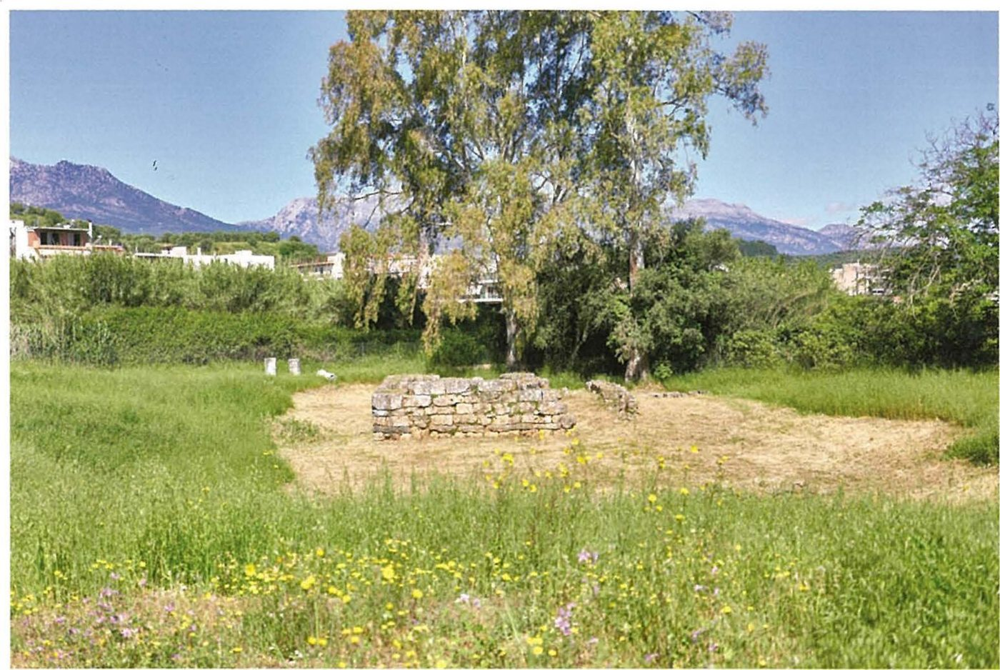
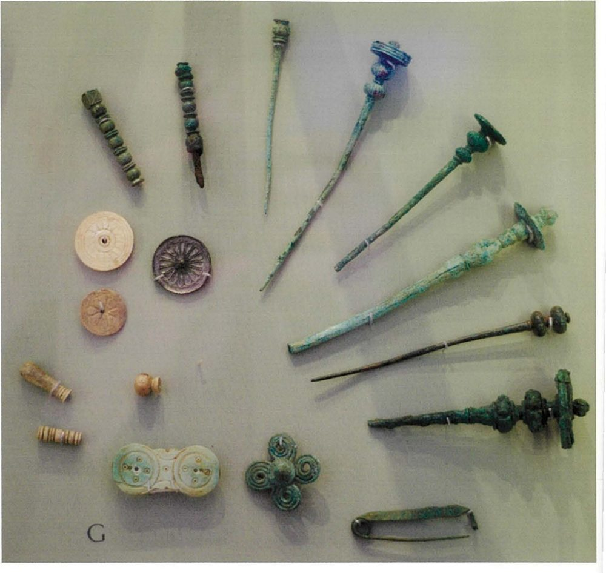
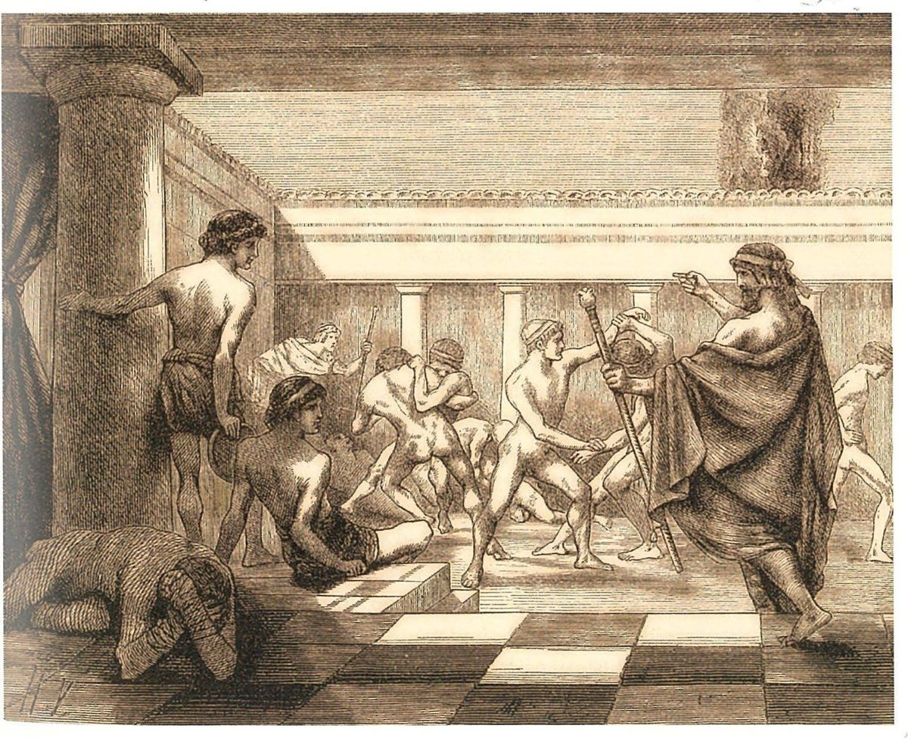

Spartan society to the Battle of Leuctra 371 BC · Lesson 10
Orthia, the Gymnopaedia and a later reconstruction?
Thousands of small offerings, a victor’s prize sickles, choruses in the summer heat — and a modern debate: how much of the famous Spartan education belongs to the classical city, and how much was rebuilt centuries later?
Year 12 Ancient History · Section II, Option G · Present with → or space · Read on a phone with R

Connect · 3 minutes · cold call
From one altar and two rituals to a debate
Xenophon presents the boys’ training — the paidonomos, bare feet, one tunic, hunger, licensed stealing — as Lycurgus’ plan to make obedient, resourceful soldiers. At the altar of Artemis Orthia his boys try to snatch cheeses while others whip them; in the 2nd century AD Pausanias describes ephebes whipped to bloody the altar.
Who else worshipped at Orthia, and what did boys win there? What happened at the Gymnopaedia? And the historians’ question: how much of the education the later writers describe was classical — and how much a later reconstruction?
One key idea from Lesson 9, in one sentence.
Learning intentions and success criteria · 2 minutes
Today’s goals
- explain how the cult of Artemis Orthia and the Gymnopaedia were linked to the training of the young
- evaluate how far the education described by ancient writers is a later reconstruction
- respond to a modern historian’s interpretation
- use the lead offerings and a victor’s dedication to say who took part in cult at Orthia, and when
- explain what the Gymnopaedia shows about the training of boys and men
- explain Kennell’s and Ducat’s positions in one sentence each
- write a judgement thesis and plan that agree with and qualify Ducat’s interpretation
Agoge is a later label: no classical source uses it for Sparta’s education, and Xenophon calls it paideia. The Gymnopaedia was a summer festival of choruses in the agora — not the place of the whipping.
Note-making · today’s routine
How to structure your notes
questions and key terms
short phrases, arrows (→ led to), abbreviations (Gymn. = Gymnopaedia)
- 1Listen and look firstDon’t copy while the slide is being explained.
- 2Write your own notes at each ✎ checkpointPhrases, not sentences. Arrows for cause and effect.
- 3Compare with the model notesThey appear one row at a time. Add what you missed in a second colour.
- 4Copy each cue question into the left columnLater, cover your notes and answer the cue questions from memory.
- 5Finish with a three-sentence summaryFive checkpoints: who worshipped at Orthia · a victor’s dedication · the Gymnopaedia · Kennell and Ducat · testing Ducat.
Key vocabulary
Words you will use today
| The evidence | Meaning |
|---|---|
| votive | an offering left for a god, often to fulfil a vow or give thanks |
| figurine | a small model figure; at Orthia, thousands were cast in lead |
| dedication | an object set up for a god, often inscribed with the giver’s name |
| sickle | a curved blade; the prize for victory in contests at Orthia |
| Gymnopaedia | (Cooley: Gymnopaidiai) a summer festival of Apollo with choruses of boys and men |
| chorus | a group that sang and danced together, often in competition |
| The debate | Meaning |
|---|---|
| historiography | the study of how historians have interpreted the past |
| interpretation | a historian’s argument about the past |
| reconstruction | here, the education rebuilt or reinvented in the Hellenistic and Roman periods |
| Hellenistic | the period after Alexander the Great (died 323 BC), before Roman rule |
| paideia | “education”: Xenophon’s word for the Spartan system |
| modality | words that show how sure you are: largely, probably, to some extent |
Spelling: Cooley’s translations use Greek forms (Ortheia, Gymnopaidiai, Lakedaimon, Alkman, Thyreai). In your own writing use Orthia, Gymnopaedia, Lacedaemon, Alcman, Thyrea.
1 · Who worshipped at Orthia? · We do — reading an object
Lead offerings from the Sanctuary of Artemis Orthia

Provenance: lead votive figurines · Sanctuary of Artemis Orthia, Sparta, beside the Eurotas · Archaic period · excavated by the British School at Athens early in the 20th century (published by R. M. Dawkins, The Sanctuary of Artemis Orthia at Sparta, 1929). Clarke & Garner: more than 100,000 lead figurines from the Archaic period have been found there.
What do these four offerings show?
A ring (perhaps a wreath), a soldier, a goddess and an animal: festival-goers, a deity, a sacred animal and the wreaths worn at festivals (Cavanagh on lead figurines like these, next slide).
Why does it matter that they were excavated?
We know where they were found: in the sanctuary itself. They are evidence of the cult of Orthia, not objects of unknown origin.
They were cheap and made in great numbers. What might that suggest?
Perhaps that many worshippers, not only the rich, made offerings. Cavanagh calls them “humbler votives”.
1 · Who worshipped at Orthia? · We do — two scholars read the finds
Who left offerings for Orthia?
Little lead figurines, humbler votives, celebrate the participants in festivals: hoplite warriors, female celebrants – perhaps members of choruses … and processions, flute and lyre players, gods and goddesses and the animals sacred to them, token imitations of rich offerings, and the wreath-crowns worn at festivals.
W. G. Cavanagh, ‘Introduction to Lakonian Archaeology’, in M. G. L. Cooley (ed.), Sparta (2023). The cut is Cavanagh’s cross-reference to Alcman’s Maiden-song (Cooley A14).
… female dedicators at the sanctuary, already inferred from the large number of bronze jewellery votives and numerous lead figurines depicting model looms and female figures with elaborately patterned dresses.
S. Hodkinson, ‘Introduction to the Epigraphy of Lakonia and Messenia’, in Cooley (ed.), Sparta (2023) — a presence he finds confirmed by a woman’s bronze dedication to Eileithyia, goddess of childbirth (Cooley C27), which, he says, “plausibly links” with two earlier dedications found at Orthia.

So who took part in cult at Orthia?
Not only boys. The figurines show festival-goers of many kinds — hoplites, women (perhaps in choruses) and musicians — and Hodkinson finds women among the dedicators.
Can we tell who dedicated a hoplite figure?
No. The figurines carry no names: a boy, a soldier or a woman could have offered it.
1 · Who worshipped at Orthia? · You do · 6 minutes · press K for the timer
Annotate the lead offerings: O, V, P, R, L
- O — why does it matter that these were excavated, so their findspot is known?
- V — what do the four types (ring or wreath, soldier, goddess, animal) suggest about who took part in cult at Orthia?
- P — these were cheap offerings. What does that suggest about the people who left them?
- R — archaeological dates “can seldom be refined even as closely as to a generation or two” (Cavanagh). Why does dating matter for a debate about change over time?
- L — no names, no words. What can they not tell us?
Then draw → links to Xenophon on the cheese contest (Cooley D74, C84) and Pausanias on the whipping (Cooley C93).
| Code | Model margin note |
|---|---|
| O | excavated at Orthia, early 20th c. (Dawkins 1929); Archaic; findspot known |
| V | hoplites, women, musicians, gods, animals → a cult for many, not only boys |
| P | gifts to fulfil a vow or give thanks; cheap → perhaps many ordinary worshippers |
| R | authentic + contemporary; but dated only roughly |
| L | no names; nothing on the cheese contest (Xen.) or the whipping (Paus.) |
Notes checkpoint 1 of 5
Who worshipped at Orthia?
Write your own notes first. Then compare, row by row, and add what you missed in a second colour.
2 · A victor’s dedication · We do — an inscription from the classical period
Arexippos and his prize sickles
To Ortheia, Arexippos as victor set these up at the boys’ meeting place, clear for all to see.
Inscribed dedication · Sanctuary of Artemis Orthia, Sparta · 4th century BC: the letter forms indicate “A fairly early date” (Cooley; the scholar Wilamowitz suggested the early 4th century) · IG V 1, 255 (Woodward no. 1 in Dawkins, p. 296) · trans. in Cooley C86
Cooley: “The inscription had cuttings for five sickles, the prizes for victory.”
What does it tell us about prizes and pride?
Victory brought prizes — sickles — and public honour: he set them up “clear for all to see”.
What contest did he win?
It does not say. Other inscriptions, mostly later, name musical, riding and hunting contests (next slide).
Why is it valuable for the classical education?
It is Spartan and contemporary: 4th-century BC evidence that a victor dedicated his prizes at Orthia, “the boys’ meeting place” — written in the city itself, not by an outsider centuries later.
How secure is the date?
It rests on letter forms: “fairly early”, not an exact year.
2 · A victor’s dedication · I do — inscriptions through time
Most victors’ dedications at Orthia are much later
| Victor | Date | Contest named |
|---|---|---|
| Arexippos (C86) | 4th century BC | none — five prize sickles |
| Xenocles (C87) | cannot be dated | the boys’ musical contest (moia) |
| Nicippus (C88) | 1st century BC | the boys’ kelea (a horse-ride) |
| Lysicrates (C89) | 1st century AD | the boys’ hunt |
| name lost (C91) | early 2nd century AD | “the contest of endurance” — the only dedication to name it |
“Of the great many inscriptions found at the site celebrating victories at the festival, the huge majority are Hellenistic or Roman in period, celebrating victories in contests much more typical of the rest of the Greek world”.
The only dedication to name it dates from the early 2nd century AD. By the 3rd century AD the whipping seems to have been popular enough to merit theatre-style seating at the sanctuary (Cooley).
Archaeology and texts agree: in classical times the contest “was not the show for sadistic Roman tourists it later became” (Cooley).
Check for understanding · hinge question · hold up 1–4 fingers
Which of these is evidence from the classical period?
- 1The dedication of a victor in “the contest of endurance” at Orthia
- 2Pausanias on the priestess who holds the goddess’s statue during the whipping
- 3Arexippos’ dedication of five prize sickles to Orthia
- 4Plutarch, who says he has seen ephebes flogged to death at the altar
3 — Arexippos, 4th century BC. The others are Roman-period: the inscription is early 2nd century AD, Pausanias wrote in the 2nd century AD and Plutarch about AD 100.
Notes checkpoint 2 of 5
A victor’s dedication
3 · The Gymnopaedia · I do — what, when and where
The Gymnopaedia: a summer festival of Apollo
Cooley: “Three major Spartan festivals celebrated Apollo – the Karneia, Hyakinthia and Gymnopaidiai.”
Ancient scholars explained it as a festival of naked boys; Cooley, following the historian Robert Parker, thinks it “more probably referred to naked or unarmed dancing (paidia)”.
Midsummer, in the agora. Pausanias says the area was called Choros (Dancing) because there “the ephebes perform dances in honour of Apollo”.
Gymnopaidia/ai: some say this is a Spartan festival in which the ephebes run around the altar at Amyklaion whipping each other on the back. This is wrong: they celebrate the festival in the agora; there is no whipping; instead there are processions of naked choruses.
Hesychios, Lexicon ‘Gymnopaidiai’ — a Greek dictionary compiled many centuries after the classical period · trans. in Cooley C72
What does Hesychius correct?
A muddle between festivals: some put a whipping at the Gymnopaedia. He says no — choruses in the agora, and no whipping.
3 · The Gymnopaedia · We do — Source 1 of 2
Choruses of boys and men
Thyreatic: this is the name of some Lakedaimonian crowns, as Sosibios says in his Sacrifices, adding that they are now called palm crowns from what they are made of. The leaders of the choruses wear them to commemorate the victory at Thyreai at the festival when they celebrate the Gymnopaidiai. There is a chorus of boys before dawn and another of the men in the early afternoon, dancing naked and singing songs by Thaletas and Alkman, and hymns of Dionysodotos the Lakonian.
Sosibios, a Spartan writer of the Hellenistic period, quoted in Athenaeus, Scholars at Dinner 15.22 (Athenaeus flourished c. AD 200) · trans. in Cooley C75
Who performed, and when?
A chorus of boys before dawn, then the men in the early afternoon, dancing naked and singing songs by Thaletas and Alcman.
What did the chorus leaders wear — and why?
Palm crowns called ‘Thyreatic’, recalling the victory over Argos at Thyrea (c. 546 BC).
Can a custom recorded in the Hellenistic period prove the festival was that old?
No. It shows what was done and believed when Sosibius wrote; the custom may be older, but this cannot prove it. Cooley says only that the festival “may have been instituted” after an earlier defeat by Argos, at Hysiai in 669/8 BC.
3 · The Gymnopaedia · We do — Source 2 of 2
The news of Leuctra arrives during the festival
The man bringing news of the disaster arrived at Lakedaimon on the last day of the Gymnopaidiai while the men’s chorus was inside. The ephors when they heard of the disaster were naturally grief-stricken, but they did not take them off stage, but allowed them to complete the competition.
Xenophon, Hellenika 6.4.16 · the news of Leuctra, 371 BC · Xenophon c. 430–c. 350 BC · trans. in Cooley C77
The ephors gave the names of the dead to their relatives, but “gave orders that the women bear their suffering in silence and avoid cries of mourning” (Cooley E112).
Which writer lived through the events he describes?
Xenophon. Cooley: he “probably witnessed the events he describes here” and “may even have been at the festival”. Sosibius wrote much later, and this passage survives only as quoted by Athenaeus.
Why might Xenophon record that the ephors let the chorus finish?
He admired Spartan discipline: even after news of a disastrous defeat, the competition for Apollo was completed.
What does neither extract describe?
The endurance contest that Plato mentions — next slide.
3 · The Gymnopaedia · I do — three more witnesses
Endurance, display — and pressure to marry
In addition, at the Gymnopaidiai, they have to show endurance, competing in the full heat of the summer …
Plato, Laws 633b–c · an Athenian philosopher, c. 429–347 BC · trans. in Cooley C74
Lichas used to entertain foreign guests who were on a visit to Lakedaimon at the Gymnopaidiai.
Xenophon, Memorabilia 1.2.61 · trans. in Cooley C76
But as well as this, Lykourgos also ensured a degree of disgrace for those who did not marry. They were banned from being spectators at the Gymnopaidiai.
Plutarch, Life of Lykourgos 15.1 · written c. AD 100 · trans. in Cooley D71
A test of endurance in the summer heat (a 4th-century BC witness); foreign guests watching; and, in a Roman-period writer, unmarried men shamed by being kept away.
If it began after a defeat by Argos, Cooley suggests, its purpose “would presumably have been to celebrate the skills of training, teamwork, fitness and endurance worked on by boys and men alike”. The choruses showed the city, and its guests, what the training produced.
Check for understanding · point left for Orthia, right for the Gymnopaedia If time
Orthia or the Gymnopaedia?
- 1Boys try to snatch cheeses while others whip them. Orthia — Xenophon (Cooley C84)
- 2A chorus of boys before dawn, the men in the early afternoon. Gymnopaedia — Sosibius (C75)
- 3A victor sets up five prize sickles. Orthia — Arexippos (C86)
- 4The ephors let the men’s chorus finish after hearing of a disaster. Gymnopaedia — Xenophon on Leuctra (C77)
- 5Thousands of small lead figurines are offered. Orthia — the excavated votives
- 6“there is no whipping; instead there are processions of naked choruses” Gymnopaedia — Hesychius (C72)
- 7Men who did not marry were banned from watching. Gymnopaedia — Plutarch (D71)
- 8Visitors watch boys beaten at the altar, some of them to death. Orthia, in the Roman period — Cicero (C92); Plutarch (D80)
Notes checkpoint 3 of 5
The Gymnopaedia
4 · A later reconstruction? · I do — where the famous picture comes from
The agoge of popular imagination

The harsh, unchanging system of popular imagination draws heavily on Plutarch (c. AD 100), Pausanias (2nd century AD) and other writers of the Roman period.
Cooley: the term agoge “is never applied by any classical-period source specifically to Sparta’s public education”; it first appears in a Spartan context about 240–230 BC. Xenophon calls the system paideia.
Xenophon wrote probably in the late 390s or 380s BC; Pausanias in the 2nd century AD — about five centuries later.
Why does the date of a source matter here?
A Roman-period writer may be describing the education of his own day, not the classical one.
4 · A later reconstruction? · We do — sort today’s evidence by date
Classical or later?
| Evidence | Date | Period |
|---|---|---|
| Lead figurines offered at Orthia | Archaic | before the classical period |
| Xenophon on the cheese contest (C84) | probably late 390s or 380s BC | classical |
| Plato on endurance at the Gymnopaedia (C74) | 4th century BC | classical |
| Arexippos’ dedication (C86) | 4th century BC | classical |
| Sosibius on the choruses (C75) | Hellenistic; quoted c. AD 200 | later |
| Plutarch: ephebes flogged to death (D80) | c. AD 100 | Roman period |
| The “contest of endurance” dedication (C91) | early 2nd century AD | Roman period |
| Pausanias on the priestess and the statue (C93) | 2nd century AD | Roman period |
Before each reveal: classical, or later?
The most gruesome details — boys flogged to death, a contest of endurance at the altar — all come from the Roman period. Cooley: “the only fourth-century BC sources show a less gruesome contest.”
Contests at the sanctuary, endurance and whipping are already there in Xenophon and Plato. The question is how much changed, not whether anything did.
4 · A later reconstruction? · I do — two historians
Kennell and Ducat: common ground — and a real disagreement
stresses change and reinvention
- In Cooley’s summary, the education system “underwent extensive ‘reconstruction’ work in the Hellenistic and Roman periods”.
- When later Spartans tried to restore their ancestral constitution, “many new ideas were presented as ancient” and credited to Lycurgus.
- Much of what Plutarch saw, including the brutal Orthia ritual, belongs to this revived system (Cooley dates the Orthia spectacle to the Roman period).
Cooley’s introduction, drawing on both
- Cooley cites both for the research that questions whether a fully regulated system existed before the late 3rd century BC, and whether agoge is the right word.
- Late sources such as Plutarch “have to be treated with caution”.
- For the classical period “we have to rely mainly on Xenophon”.
stresses how central education was in the classical city
- He reconstructs the classical system mainly from Xenophon: Cooley recommends his book “For a full discussion of the classical system on this basis”.
- An extract from his earlier essay, printed on the 2025 HSC paper, argues that education mattered more at Sparta than in any other Greek city (next slide).
They share ground (both doubt the word agoge), but they disagree on how far later evidence can be used: Kennell thinks the system broke down twice, so Roman-era evidence reflects traditions invented later; Ducat uses later evidence cautiously beside Xenophon. Cooley, summing up Kennell’s work, concludes: “Later forms of the system probably resembled the original one in essentials, but also included many new features.”
4 · A later reconstruction? · I do — responding to an interpretation, step 1: what does he claim?
Ducat’s interpretation
Of all Greek cities, Sparta is surely the one where education played the greatest role, because the model of the citizen was particularly demanding and exerted a very strong pressure on individuals; in particular, one of its principal missions was to make them as far as possible the same, which implied that the process should be identical for all. Education is, therefore, at the heart of Spartan ideology and practice.
Jean Ducat, ‘Perspectives on Spartan Education in the Classical Period’, in S. Hodkinson and A. Powell (eds), Sparta: New Perspectives · as printed on the 2025 HSC paper, which cites the 2009 edition (first published 1999) · © Classical Press of Wales
What is his main claim?
Education mattered more at Sparta than in any other Greek city. Notice his own modality: “surely”.
What reason does he give?
The model citizen was so demanding that it put strong pressure on every individual.
What was education for?
To make citizens “as far as possible the same” — the homoioi, the ‘equals’.
What can we test?
“identical for all”: were future kings, mothakes, girls and helots treated the same?
What does he conclude?
Education was at the heart of what Spartans believed (ideology) and what they did (practice).
Notes checkpoint 4 of 5
A later reconstruction? Kennell and Ducat
5 · Testing Ducat · We do — the planning scaffold, step 2: test him against the sources
Where do the sources support Ducat — and where do they qualify him?
| Supports Ducat | Qualifies Ducat |
|---|---|
| Xenophon, a contemporary, describes a compulsory public education run by an official, the paidonomos.Xenophon, Constitution 2.2 · Cooley D74 | Xenophon probably idealises Sparta, and “only offers a rough overview” of the system (Cooley).Cooley, introductions to the literary sources (Xenophon) and to the education system |
| The education “was a precondition for becoming a citizen, and it created a high degree of conformity” (Cooley); choosing the 300 hippeis made competition part of growing up.Cooley; Xenophon, Constitution 4.3 · D79 | “The law exempts boys being raised as future kings”, while mothakes, “not actually Lakedaimonians”, shared the education: it was not identical for all citizens, nor limited to future citizens.Plutarch, Agesilaos 1 · D75; Phylarchos · D30 |
| Arexippos’ 4th-century dedication suggests boys’ contests at Orthia (“at the boys’ meeting place”).Cooley C86 | The huge majority of Orthia inscriptions are Hellenistic or Roman, and the brutal whipping belongs to the Roman period.Cooley C87–C94 |
| Choruses of boys and men at the Gymnopaedia displayed the training in public — even after the news of Leuctra.Sosibios · C75; Xenophon · C77 | Girls were trained too, but apparently to be strong mothers (Cooley), and helots were outside the system: Ducat’s ‘the same’ means future citizens.Cooley, introductions to women and education; Xenophon, Constitution 1.4 · D68 |
Your judgement: how far is Ducat right? Use modality — largely, mainly, to some extent.
5 · Testing Ducat · I do — responding to an interpretation, step 3: judge, with modality
A judgement thesis
Ducat is largely right that education lay at the heart of Spartan ideology in the classical period, since Xenophon presents it as the foundation of obedience and citizenship; however, much of the harsh agoge described by later writers is probably a Hellenistic and Roman reconstruction, so the classical system must be judged mainly from Xenophon.
- 1Judgement“largely right” — a position, already qualified.
- 2Reason“since” — the evidence behind it.
- 3Qualification“however … probably” — where he needs limiting.
- 4Consequence“so … mainly” — what follows for how we use the sources.
Write your own one-sentence thesis on Ducat: a judgement, a reason and a qualification, with at least two modality words.
Check for understanding · gesture vote
“Education is, therefore, at the heart of Spartan ideology and practice.”
Agree
Partly
Disagree
Justify your vote with one source from today — and one modality word.
Notes checkpoint 5 of 5
Testing Ducat
Finish your notes
Summary: three sentences
- What do the finds at Orthia show about who worshipped there and how the contest changed?
- What was the Gymnopaedia, and why does it belong with education?
- How far is Ducat right, given Kennell’s argument?
At Orthia, lead figurines show hoplites, women and musicians worshipping from the Archaic period, and Arexippos’ 4th-century dedication suggests boys competing for prizes, but most victors’ inscriptions and the brutal whipping are Hellenistic or Roman. The Gymnopaedia was a midsummer festival of Apollo in the agora, where choruses of boys and men displayed the endurance the education produced, even after the news of Leuctra. Ducat is largely right that education was at the heart of classical Spartan ideology and practice, but much of the harsh system in later writers is probably a reconstruction (Kennell), so the classical system must be judged mainly from Xenophon.
6 · Answering HSC questions
Today’s lesson was examined in 2025
25 marks, about 45 minutes — about 1.8 minutes a mark. 15 marks ≈ 27 minutes.
NESA: “Make a judgement of value, quality, outcomes, results or size.”
“Support your answer with reference to the following interpretation and other relevant sources.” Use it, test it — don’t just quote it.
We take the question apart, read the criteria and the markers’ feedback, test NESA’s list of points against Cooley and plan it together. Then you plan your own and compare it with an annotated model.
HSC 2025 · Section II · Question 11 (c) · 15 marks
Assess the importance of education and training in Spartan society during this period. Support your answer with reference to the following interpretation and other relevant sources.
The interpretation is Jean Ducat’s (slide 23). We do — take it apart and plan it together; then you do — plan your own.
HSC 2025 Q11(c) · I do — deconstruct the question and the interpretation
What the question is really asking
Of all Greek cities, Sparta is surely the one where education played the greatest role, because the model of the citizen was particularly demanding and exerted a very strong pressure on individuals; in particular, one of its principal missions was to make them as far as possible the same, which implied that the process should be identical for all. Education is, therefore, at the heart of Spartan ideology and practice.
JEAN DUCAT · ‘Perspectives on Spartan Education in the Classical Period’ · Sparta: New Perspectives, 2009 · © Classical Press of Wales (as printed on the 2025 paper; first published 1999)
About 27 minutes · a thesis that judges · three paragraphs, each testing a phrase of Ducat · about 600–750 words.
A judgement of how important education and training were, and in what ways — not a description of the agoge.
Boys and girls. The 2025 markers rewarded answers that assessed a number of features, “including physical, military and ideological areas”.
To 371 BC. Flag late evidence — Plutarch, Pausanias — as late: that is Kennell’s point.
Interact with Ducat: agree with one phrase, test another. Name and date your other sources.
HSC 2025 Q11(c) · the marking guidelines and the markers’ feedback
What the markers rewarded
| Marks | Criteria (2025, part (c)) |
|---|---|
| 13–15 | Provides a well-developed and reasoned judgement relevant to the question · Demonstrates detailed and accurate knowledge and understanding relevant to the question · Interacts with the interpretation provided and uses evidence from other relevant sources to support the response · Communicates effectively using a range of appropriate historical terms and concepts |
| 10–12 | Provides a reasoned judgement relevant to the question · Demonstrates accurate knowledge and understanding relevant to the question · Refers to the interpretation provided and uses other relevant source(s) to support the response · Communicates clearly using appropriate historical terms and concepts |
| 7–9 | Provides some judgement relevant to the question · Demonstrates knowledge and understanding relevant to the question · Refers to the interpretation provided and/or other source(s) · Communicates using some appropriate historical terms and/or concepts |
| 4–6 | Demonstrates some knowledge and/or understanding relevant to the question · May refer to the interpretation provided and/or other source(s) · Communicates using some historical terms and/or concepts |
| 1–3 | Makes general statement(s) relevant to the question · May refer to the interpretation provided and/or a source · May use some historical terms and/or concepts |
interact with the interpretation and provide other sources to support their judgement (c)assess a number of features of Sparta’s education and training regimes, including physical, military and ideological areas (c)communicate clearly using historical terms and concepts (c)
integrating sources in the response, rather than just referring to writers in a generic way (c)
The 10–12 band “Refers to the interpretation provided”; the 13–15 band “Interacts with the interpretation provided”. Quoting Ducat is not enough — test him.
Source: NESA, 2025 HSC Ancient History Marking Guidelines (Section II, part (c)) and the 2025 marking feedback for Question 11, quoted exactly.
HSC 2025 Q11(c) · We do — NESA’s “answers could include”, annotated (1 of 2)
What the marking guidelines listed: boys, the ‘same’, girls
Answers could include, Option G: NESA 2025 HSC Ancient History Marking Guidelines, Section II part (c) · points 1–3 of 5
Marker’s margin
HSC 2025 Q11(c) · We do — NESA’s “answers could include”, annotated (2 of 2)
What the marking guidelines listed: song, competition, religion
Answers could include, Option G: NESA 2025 HSC Ancient History Marking Guidelines, Section II part (c) · points 4–5 of 5
Marker’s margin
Even sharper: date every source you take from this list — Xenophon probably late 390s or 380s BC, Aristophanes 411 BC, Plutarch c. AD 100 (and Athenaeus c. AD 200 if you use him for the marching songs) — and you are already answering “during this period”.
HSC 2025 Q11(c) · We do — a plan in five moves, written for this lesson
Each paragraph tests a phrase of the interpretation
| Move | Ducat’s words | Evidence | → Judgement |
|---|---|---|---|
| Thesis | ‘at the heart of Spartan ideology and practice’ | Largely right for the classical city — but not ‘identical for all’, and much of the evidence is late. | |
| 1 · Purpose and features | ‘particularly demanding’ | Xenophon, Constitution 2 (D74, C84) · Arexippos (C86) · Herodotus 7.104 (D46) | the state trained citizens for war → agree |
| 2 · Making citizens the same | ‘as far as possible the same’ | Cooley on citizenship · Cinadon (E53a) · marching songs (A2) · the Gymnopaedia (C75, C74, C77) · mothakes, not full Lacedaemonians (D30) | the strongest support: physical, military and ideological |
| 3 · The limits | ‘identical for all’ | future kings (D75) · girls (D68) · helots and the krypteia (D44, D42) · the Orthia whipping (C93) · Kennell | qualify: for future citizens; much evidence late |
| Conclusion | At the heart of Spartiate identity — for a minority of men, and partly a later reconstruction. | ||
Every paragraph names and dates its sources, and every claim carries a modality word.
HSC 2025 Q11(c) · You do · 23 minutes · press K for the timer
Assess the importance of education and training in Spartan society during this period. Support your answer with reference to the following interpretation and other relevant sources. (15 marks)
- a judgement thesis on Ducat, with modality
- three topic sentences, each testing a phrase of the interpretation
- named, dated evidence under each — Xenophon, Plato, an inscription, a festival
- the limits: future kings, girls, helots, late evidence
- one closing sentence that refines the thesis
Start: “Ducat is largely right that education was at the heart of Spartan ideology and practice, because … ; however, …”
The Supports / Qualifies table (slide 25) is your scaffold.
HSC 2025 Q11(c) · annotated model · thesis and paragraph 1 of 3
Judge Ducat first — then agree where the evidence agrees
Model written for this lesson · thesis and paragraph 1 of 3
Marker’s margin
HSC 2025 Q11(c) · annotated model · paragraph 2 of 3
Test the key phrase: ‘as far as possible the same’
Model written for this lesson · paragraph 2 of 3
Marker’s margin
HSC 2025 Q11(c) · annotated model · paragraph 3 and conclusion
Then qualify — and resolve
Model written for this lesson · whole answer ≈ 610 words, about 27 minutes
Marker’s margin
HSC 2025 Q11(c) · three answers that fall short
Why answers drop marks
At about seven Spartan boys left home to be trained. They went barefoot, wore one tunic all year and were allowed to steal food. At Orthia they competed to steal cheeses, and at the Gymnopaedia they danced …
Some knowledge, but no judgement about importance, and the interpretation is never used.
Ducat says education was ‘at the heart of Spartan ideology and practice’. This is true, because Xenophon describes the paidonomos and the boys were trained to be soldiers …
It refers to the interpretation and a source and gives some judgement, but it repeats Ducat instead of testing him. The top band “Interacts with the interpretation provided”.
Ducat is right: Plutarch saw Spartan boys flogged to death at the altar of Orthia, which shows how harsh the classical education was.
Plutarch wrote about AD 100 and describes the Roman-period ritual. Cooley: in classical times the contest “was not the show for sadistic Roman tourists it later became”.
Written for this lesson to show the marking criteria — not real student answers.
HSC 2025 Q11(c) · Self-mark and peer check
Mark your own plan
Fewer than five ticks? Add the missing move in a second colour.
Read your thesis to a partner. Does it make a judgement, give a reason, and qualify it? Does it interact with Ducat, or only quote him?
Explain the significance of the Gymnopaedia for Spartan society. (6 marks)
To what extent was the Spartan education described by ancient writers a later reconstruction? (12 marks)
Practice and review · 1 of 7 · sequencing · written for this lesson
Put these in order, earliest first — and say what each shows
- APlutarch says he has seen ephebes flogged to death at the altar of Orthia
- BThousands of small lead figurines are offered to Orthia
- CThe news of the defeat at Leuctra reaches the Gymnopaedia during the men’s chorus
- DXenophon describes boys stealing cheeses from the altar while others whip them
- EThe word agoge first appears in a Spartan context
- FNicippus wins the boys’ kelea (a horse-ride) and makes a dedication to Orthia
- GPausanias records the priestess holding the goddess’s statue at the whipping
- HSemicircular theatre seating is built at the sanctuary
- 1 · B (Archaic period) — a popular cult: hoplites, women, musicians.
- 2 · D (probably late 390s or 380s BC) — the classical contest: harsh, but less gruesome than later.
- 3 · C (371 BC) — even disaster did not stop the festival; Xenophon probably witnessed it.
- 4 · E (c. 240–230 BC) — its use for Sparta’s education is Hellenistic, not classical.
- 5 · F (1st century BC) — later contests, “much more typical of the rest of the Greek world” (Cooley).
- 6 · A (c. AD 100) — the Roman-period ritual, with deaths.
- 7 · G (2nd century AD) — a Roman-period story credited to Lycurgus: “an entirely specious justification” (Cooley).
- 8 · H (3rd century AD) — the whipping, it seems, had become a spectacle popular enough to need seating (Cooley).
Practice and review · 2 of 7 · true, false, justify · written for this lesson
True or false? Justify with a source
- 1Cavanagh says little lead figurines celebrate the participants in festivals, including women. True — “hoplite warriors, female celebrants” (W. G. Cavanagh, in Cooley).
- 2Arexippos’ dedication names the contest he won. False — it says only that he set up his prizes as victor; later dedications name musical, riding and hunting contests (Cooley C88–C90; C87, a musical contest, cannot be dated).
- 3The only Orthia dedication to name the contest of endurance dates from the Roman period. True — early 2nd century AD: “This is the only dedication to mention the contest of endurance” (Cooley, on C91).
- 4Sosibius says boys and men danced in separate choruses at the Gymnopaedia. True — “a chorus of boys before dawn and another of the men in the early afternoon” (C75).
- 5When the news of Leuctra arrived, the ephors stopped the Gymnopaedia. False — they “did not take them off stage, but allowed them to complete the competition” (Xenophon, C77).
- 6Plutarch says men who did not marry were banned from watching the Gymnopaedia. True — “They were banned from being spectators at the Gymnopaidiai” (D71).
- 7Every Spartan boy, including the heir to the throne, had to go through the education. False — “The law exempts boys being raised as future kings from this compulsory practice” (Plutarch, Agesilaos 1, D75).
- 8Cooley thinks the later forms of the education had nothing in common with the classical system. False — “Later forms of the system probably resembled the original one in essentials, but also included many new features.”
Practice and review · 3 of 7 · cloze · Chapter 7 Activity C
Fill the gaps
- The official in charge of the boys’ education was the paidonomos.
- Xenophon’s word for the Spartan system of education is paideia.
- Plutarch says boys were placed in herds called agelai at the age of seven.
- Plutarch says an eiren was a young man of about twenty who commanded boys.
- Each year the hippagretai chose three hundred young men as the hippeis.
- Arexippos won sickles as prizes and set them up for Orthia.
- Pausanias says that in his day the priestess held a small wooden statue of the goddess.
- At the Gymnopaedia, choruses of boys and men danced in the agora in summer.
Practice and review · 4 of 7 · write an analytical paragraph · written for this lesson
How useful is the evidence from the Sanctuary of Artemis Orthia for understanding Spartan education in the classical period?
The Orthia evidence is very useful for the classical education, but only once it is sorted by date, because most of it describes a later ritual. For the classical period, Xenophon, writing probably in the late 390s or 380s BC, describes boys competing to “steal cheeses from the altar of Artemis Orthia” while others whipped them, and the dedication of Arexippos, dated by its letter forms to the 4th century BC, shows a victor setting up his prize sickles “at the boys’ meeting place, clear for all to see”. Together they show that contests, prizes and public honour were already part of growing up at Sparta. Yet the most famous evidence is Roman: Plutarch says he has seen ephebes “being flogged to death at the altar of Artemis Orthia”, and the only inscription naming a contest of endurance dates from the early 2nd century AD. Xenophon admired Sparta and may idealise it, and the inscription’s date is approximate, but the two classical sources are consistent with each other and differ sharply from the Roman ones. Orthia therefore supports Kennell’s argument that the brutal ritual was a later development, while confirming, as Ducat would expect, that competition at the sanctuary was already part of the classical education.
Practice and review · 5 of 7 · extended response · HSC-style, written for this lesson
To what extent does the evidence from the Sanctuary of Artemis Orthia support the view that the Spartan education changed significantly over time? (15 marks)
Use evidence from relevant sources. Plan it in four moves:
- Thesis in your first sentence: how far did the contest and the education change between the classical and Roman periods — and what lasted?
- Classical evidence: Xenophon’s cheese contest (Cooley D74, C84), Plato’s ‘raids’ with whippings (C85) and Arexippos’ dedication (C86); the Archaic lead offerings show a popular cult, but not the contest.
- Hellenistic and Roman evidence: Pausanias (C93), Cicero (C92) and Plutarch (D80, C94); the later victors’ dedications, including the only one naming the contest of endurance (C87–C91); the 3rd-century AD theatre seating.
- Historiography: Kennell (reconstruction), Ducat (the classical system, mainly from Xenophon) — what they share and where they disagree — and Cooley’s conclusion, summing up Kennell’s work, that later forms probably resembled the original “in essentials”.
Practice and review · 6 of 7 · Chapter 7 review, questions 1–4
Chapter review: the agoge (1)
- Name the officials and age groups involved in the boys’ education. Officials: the paidonomos (“boy-herd”), from the highest political class, helped by young men (hebontes) armed with whips; an eiren in charge of each herd of boys (Xenophon and Plutarch); the ephors, who chose the three hippagretai. Age groups: paides (from about seven), paidikoi (teenagers) and young men in their twenties — Xenophon’s hebontes, Plutarch’s eirens — probably from about 20 to 30. The ages come from Plutarch and later writers.
- Explain the purpose of the education as Xenophon presents it. To make obedient, enduring and resourceful citizen-soldiers: bare feet for climbing hills, one tunic for cold and heat, little food so they could keep going on an empty stomach, and licensed stealing to make them “more skilful at finding supplies and better soldiers overall”. Constant supervision taught respect for authority. He frames it all as Lycurgus’ plan — “Lykourgos did the opposite” of other Greeks — so he is also praising Sparta.
- Explain the role of competition in the education, using the hippeis as an example. Xenophon says Lycurgus wanted a competition for courage among the young men: the ephors chose three hippagretai, and each chose a hundred others, “openly stating the reasons for choosing this one and rejecting that”. Chosen and rejected then watched each other for any breach of the code of honour, so rivalry kept everyone striving. Contests at Orthia (Arexippos’ prize sickles) and the choruses show competition from boyhood on.
- Compare the contest at the altar of Orthia in Xenophon and in Pausanias. Xenophon (probably late 390s or 380s BC): boys compete to steal cheeses from the altar while others whip them — “a little pain means a long term gain in fame and delight”. Pausanias (2nd century AD): ephebes are whipped to fill the altar with blood, a rite he credits to Lycurgus as a replacement for human sacrifice. A contest of speed and theft had become an ordeal of endurance; Cooley calls the Lycurgan explanation “an entirely specious justification”.
Practice and review · 7 of 7 · Chapter 7 review, questions 5–8
Chapter review: the agoge (2)
- What do the lead votives and the Arexippos inscription reveal about the cult of Artemis Orthia? The votives show a popular cult from the Archaic period: Cavanagh says such figurines “celebrate the participants in festivals” — hoplites, female celebrants, musicians — and Hodkinson notes women dedicators. Arexippos’ 4th-century dedication of prize sickles “at the boys’ meeting place” suggests boys competing there in the classical period. Neither shows the Roman-period endurance contest.
- Explain the significance of the Gymnopaedia for Spartan society. A midsummer festival of Apollo in the agora, where choruses of boys and men sang and danced (Sosibius) and showed “endurance, competing in the full heat of the summer” (Plato). It displayed the training to the city and its foreign guests, shamed unmarried men, who were barred from watching (Plutarch), and mattered so much that the ephors let the men’s chorus finish after the news of Leuctra (Xenophon).
- Evaluate Kennell’s view that much of the agoge is a later reconstruction. Strong for the harshest features: the word agoge first appears in a Spartan context c. 240–230 BC, and the floggings to death, the endurance-contest dedication and the theatre seating are all Roman. But Xenophon, Plato and Arexippos show a real classical system with whipping, endurance and contests, so Cooley’s conclusion, summing up Kennell’s work, convinces: later forms “probably resembled the original one in essentials, but also included many new features”.
- To what extent do you agree with Ducat that education was at the heart of Spartan ideology and practice? Largely: Xenophon describes a compulsory state system, and Cooley says it “was a precondition for becoming a citizen”; festivals such as the Gymnopaedia displayed it. But it was not ‘identical for all’ — future kings were exempt, girls were trained mainly to be strong mothers and helots were outside it (though mothakes, not full Lacedaemonians, shared it) — and much of the harsher evidence is late, so the judgement must rest mainly on Xenophon.
Exit ticket · before you leave
Two sentences and a check
Kennell in one sentence; Ducat in one sentence.
Read your thesis to a partner. Does it make a judgement, give a reason, and qualify it?
Next lesson: the Spartan army — composition, ethos and the war dead — which young men joined at about twenty.
Sources and credits
Where everything comes from
Quoted from the translations in M. G. L. Cooley (ed.), Sparta, LACTOR Sourcebooks in Ancient History 21, 2nd edn (Cambridge University Press, 2023): Xenophon, Constitution of the Lakedaimonians 1.4, 2.2–9 and 4.2–3 (D68, D74, C84, D79), Hellenika 3.3.5 and 6.4.16 (E53a, C77, E112) and Memorabilia 1.2.61 (C76); Plato, Laws 633b–c (C85, C74, D42); Herodotus 7.104.4 (D46); Plutarch, Life of Lykourgos 15.1, 18.1 and 28 (D71, D80, D44), Life of Agesilaos 1 (D75) and Spartan Customs 40 (C94); Pausanias 3.11.9 and 3.16.10–11 (C73, C93); Sosibios in Athenaeus 15.22 (C75); Athenaeus 14.29 (A2); Phylarchos in Athenaeus 6.102 (D30); Hesychios, Lexicon (C72); Cicero, Tusculan Disputations 2.34 (C92); Tyrtaeus fr. 12 (A9); Alcman fr. 1 (A14); Aristophanes, Lysistrata 79–84 (D66); dedications to Orthia IG V 1, 255, 269, 263, 274, 257 and 290 (C86–C91). Cooley’s introductions to the education system, women, the festivals, Artemis Orthia, the Spartiates, the helots, the literary sources and the Spartan mirage; W. G. Cavanagh, ‘Introduction to Lakonian Archaeology’, and S. Hodkinson, ‘Introduction to the Epigraphy of Lakonia and Messenia’, both in Cooley.
- The remains of the Temple of Artemis Orthia in Sparta — Clarke & Garner, Fig 7.5
- Small lead offerings from the Sanctuary of Artemis Orthia: a ring, a soldier, a goddess and some form of animal — Clarke & Garner, Fig 7.6
- Brooches and dress pins of bronze, silver and bone found at the Sanctuary of Artemis Orthia — Clarke & Garner, Fig 5.2
- A modern engraving imagining boys wrestling while an older man with a staff directs them — an artist’s picture, not ancient evidence — Clarke & Garner, Fig 4.3
Books: Clarke & Garner, Spartan society textbook (school copy).
Textbook images are reproduced for teaching, with the source given under each one. The tables in this lesson were drawn for it; the Supports / Qualifies table is rebuilt from the unit textbook, Chapter 7.
N. M. Kennell, The Gymnasium of Virtue (1995) and ‘Boys, girls, family, and the state at Sparta’ (2013), as quoted in Clarke & Garner, Source Study 4.3; J. Ducat, Spartan Education (2006) and ‘Perspectives on Spartan Education in the Classical Period’, in S. Hodkinson and A. Powell (eds), Sparta: New Perspectives (first published 1999; the 2025 HSC paper cites the 2009 edition); R. Parker, ‘Spartan Religion’ (1989), as cited in Cooley. HSC question, interpretation, marking criteria, “answers could include” and marking feedback: NSW Education Standards Authority, 2025 HSC Ancient History examination, marking guidelines and feedback. © NESA. NESA glossary of key words for “assess”.